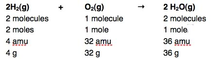

| Chapter 1.5: Evidence for Atoms |
It is important to note that from the time that the first ideas of atoms arose, and for thousands of years thereafter, there was not one iota of evidence for the particulate nature of matter or the physical existence of atoms. The idea of atoms was purely a product of imagination, and while there was vigorous debate about the nature of matter, this debate could not be settled scientifically until there was objective evidence one way or another. |
1.1 Atoms |
So the question arises, how did scientists in the nineteenth century eventually produce clear evidence for the existence of atoms? We have already said atoms are much too small to be seen by any direct method. So what would lead scientists to the unavoidable conclusion that matter is composed of discrete atoms? In fact, often a huge intuitive leap must be made to explain the results of scientific observations. For example, the story about Isaac Newton (1643-1727) and the falling apple captures this truism, namely the remarkable assumption that the movement of the earth around the sun, the movement of the moon around the earth, and the falling of an apple to earth are all due to a common factor, the force of gravity, which acts at a distance and obeys an inverse square relationship (1/r2, where ”r” is the distance between two objects). This seems like a pretty weird and rather over-blown assumption; how does this “action at a distance” work? Yet, followed scientifically it appears to be quite powerful and remarkably accurate. The point is that Newton was able to make sense of the data - something that is in no way trivial. It requires a capacity for deep, original and complex thought. That said, it was not until Albert Einstein proposed his general theory of relativity (1915) that there was a coherent mechanistic explanation for gravitational forces. The first scientific theory of atomic structure was proposed by John Dalton (1766 - 1844), a self taught Quaker [religious dissenters, that is non-Anglicans, were not allowed access to English universities at that time ] living in Manchester, England. In 1805 Dalton published his atomic theory to explain the observed law of multiple proportions. Rather surprisingly, Dalton never really explained what led him to propose his atomic theory, although he certainly used it to explain existing rules about how different elements combine. Among these rules (or Laws) was the observation that the total matter present in a system did not change when a chemical reaction occurred, although a reaction might lead to a change from a solid to a gas or vice versa. Inspection of his laboratory notebooks suggests that he first began to develop this atomic theory as he was experimenting on the nature of different gases and their solubility in water. In 1803 he wrote: This was the first indication that he was thinking about gases in terms of particles (atoms/molecules, that is combinations of atoms). In case you missed this extraordinary deduction (and it is very easy to do), Dalton made the leap to the idea of atoms with different weights from his observations that different gases dissolved in water in different amounts and the law of multiple proportions. Dalton’s atomic theory (1805) had a number of important points:
|
The law of multiple proportions The law of multiple proportions is an empirical law, that is a law based on observation rather than theoretical logic. It states that when two elements (for example carbon and oxygen) combine to form more than one type of compound, such as carbon monoxide and carbon dioxide, the ratio of the mass of oxygen in carbon monoxide is always in some whole number to the mass of oxygen in carbon dioxide. One problem chemists have is that we deal with things that happen at a scale that we cannot see (and is very difficult to imagine). As a result we have to develop a number of skills and tools to connect the molecular world with the world we can see. For example: a large part of the later sections of the book is taken up with developing ways to help you visualize molecular level structures and events. But, while thinking about the molecular level is important, it is also necessary to be able to connect those molecular changes with what we can see and measure in the world we live in. For example we might visualize a chemical reaction as a molecule of one reactant interacting with another molecule to give a product. We generally write reactions down in the form of equations, for example:
|
| All the other elements have masses that are defined relative to this mass. So for example, the equation above could mean all these things: |  |
A note on the conservation of matter: Based on this equation, you might reasonably assume that matter and energy are freely interconvertable, but the conditions under which matter converts into energy or energy into matter are not so common, and when they occur in the “normal world” they involve extremely small mass changes. When plants absorb light, they do not convert it into matter, but use the energy to rearrange atoms and molecules, a topic we will return to later. |
All living organisms use some kind of energy to make changes, but energy is not directly converted into matter. In fact it is the interconversion of matter into energy that is ultimately responsible for the light given off by the sun and the energy released by nuclear power plants (and atomic bombs). In Dalton's day, the possibility of the interconversion of matter and energy was not known, and from our perspective as chemists is not something we need to consider. But so that we do not confuse you further, energy and matter are forms of the same basic stuff and the total amount of energy + matter in the universe is a constant (or so it appears to modern astrophysicists). |
1.1
Atoms |
Question to answer:
Questions for ponder:
|
| 27-Jun-2012 |